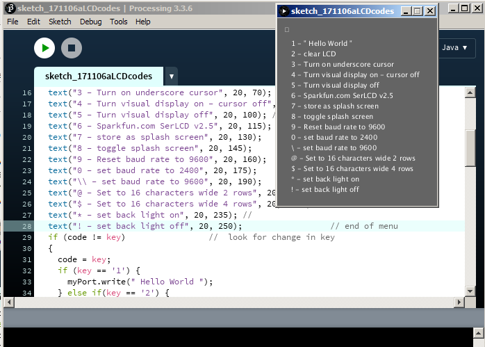

There is an image of the GUI in the screenshot. I could do some of the commands just using PuTTY but when attempting to find a way to send the 0xFE code I came across the suggestion on line to use Processing. The little application is something like a special purpose terminal program.

Most printable characters are sent over the USB to serial link to the LCD just as one types them.
import processing.serial.*;
Serial myPort;
void setup() {
size(230, 270);
myPort = new Serial(this, "COM4", 9600);
textSize(10);
}
void draw() {
background(100);
text(key, 10, 20); // Draw "key" at coordinate (10,20)
text("1 - \" Hello World \"", 20, 40); // start of Menu
text("2 - clear LCD", 20, 55);
text("3 - Turn on underscore cursor", 20, 70);
text("4 - Turn visual display on - cursor off", 20, 85); //
text("5 - Turn visual display off", 20, 100); //
text("6 - Sparkfun.com SerLCD v2.5", 20, 115);
text("7 - store as splash screen", 20, 130);
text("8 - toggle splash screen", 20, 145);
text("9 - Reset baud rate to 9600", 20, 160);
text("0 - set baud rate to 2400", 20, 175);
text("\\ - set baud rate to 9600", 20, 190);
text("@ - Set to 16 characters wide 2 rows", 20, 205); //
text("$ - Set to 16 characters wide 4 rows", 20, 220); //
text("* - set back light on", 20, 235); //
text("! - set back light off", 20, 250); // end of menu
}
void keyPressed() {
if (key == '1') {
myPort.write(" Hello World ");
} else if(key == '2') {
myPort.write(0xFE); // command code
myPort.write(0x01); // clear screen
} else if (key =='3') {
myPort.write(0xFE); // command code
myPort.write(0x0E); // Underline cursor on
} else if (key =='4') {
myPort.write(0xFE); // command code
myPort.write(0x0C); // Underline cursor off display on
} else if (key =='5') {
myPort.write(0xFE); // command code
myPort.write(0x08); // display off
} else if (key =='6') {
myPort.write(" Sparkfun.com SerLCD v2.5 ");
} else if (key =='7') {
myPort.write(0x7C); // command code
myPort.write(0x0A); // store display as splash screen
} else if (key =='8') {
myPort.write(0x7C); // command code
myPort.write(0x09); // toggle splash screen
} else if (key =='9') {
myPort.write(0x7C); // command code
myPort.write(0x12); // reset to 9600 baud
} else if (key =='0') {
myPort.write(0x7C); // command code
myPort.write(0x0B); // set to 2400 baud
} else if (key =='\\') {
myPort.write(0x7C); // command code
myPort.write(0x0D); // set to 9600 baud
} else if (key =='@') {
myPort.write(0x7C); // command code
myPort.write(0x04); // set to 16 characters wide
myPort.write(0x7C); // command code
myPort.write(0x06); // set to 2 rows
} else if (key =='$') {
myPort.write(0x7C); // command code
myPort.write(0x04); // set to 16 characters wide
myPort.write(0x7C); // command code
myPort.write(0x05); // set to 4 rows
} else if (key =='*') {
myPort.write(0x7C); // command code
myPort.write(157); // set back light 1on max
} else if (key =='!') {
myPort.write(0x7C); // command code
myPort.write(128); // set back light off
} else if (key == ' ') {
myPort.write(0x20);
} else if (key == CODED)
{
} else
{
myPort.write(key);
}
}I looked at Processing once before. It has an advantage in being quick and easy to use.
Old notes at old Processing Notes